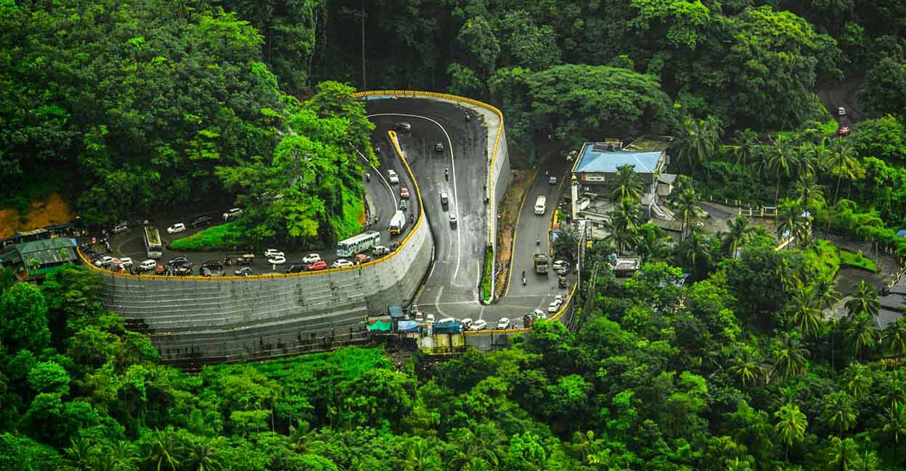

Home
Log In
Signup
Destinations
Districts
Contact Us
Kasargod
Saptha Bhasha Sangama Bhoomi
Kannur
Cannanore

Wayand
Kerala's lush paradise
Kozhikode
Calicut
Malappuram
Terraced place atop the hills
Palakkad
Palghat
Thrisuur
Thrissivaperur
Ernakulam
Small estuary
Idukki
Spice Garden of Kerala
Kottayam
City of letters
Alappuzha
Venice of East
Pathanamthitta
Headquarters of Pilgrimage Tourism
Kollam
Desinganadu
Trivandrum
The town of Lord ANANTHA